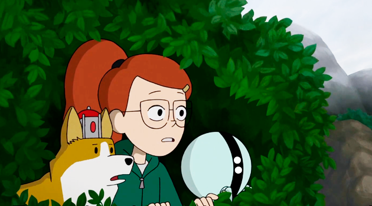

INFINITY TRAIN
Año: 2019
Creador: Owen Dennis
Edades: Todo público
Género: Misterio
Puntuación
Reseña
La serie es una antología animada, cuya trama transcurre en torno
a un tren de gran envergadura y aparentemente infinito que viaja a
través de un paisaje árido en un universo paralelo. El tren se aparece
traspasando la realidad y recoge pasajeros que tienen problemas emocionales
no resueltos teletransportándolos a otra dimensión. Los vagones del tren
contienen una variedad de mundos extraños y fantásticos; a medida que los
pasajeros viajan a través de los vagones del tren, sus aventuras les dan la
oportunidad de confrontar y resolver sus problemas.
Comentarios
Su nombre
Comentario
Comentar
Regresar